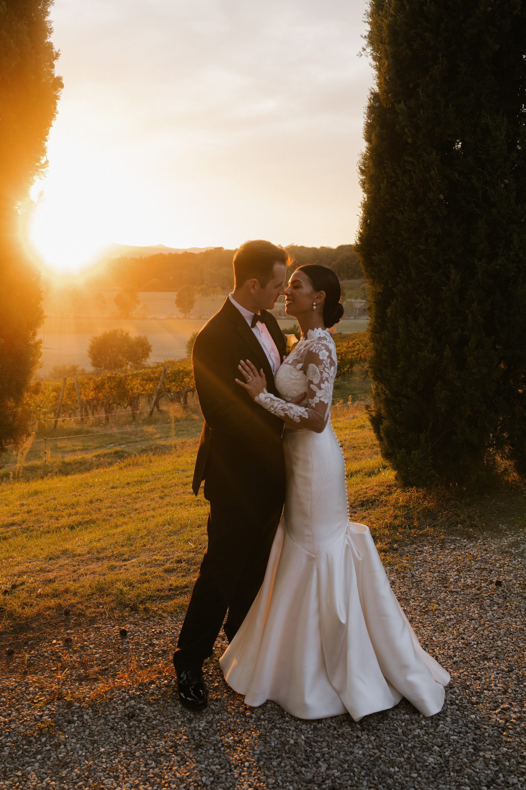
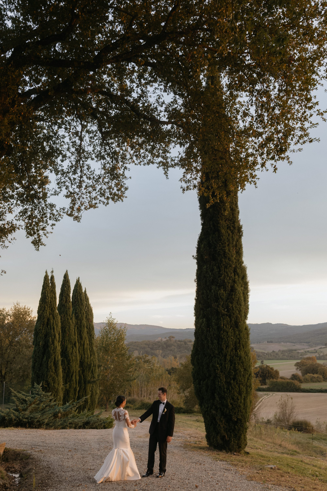
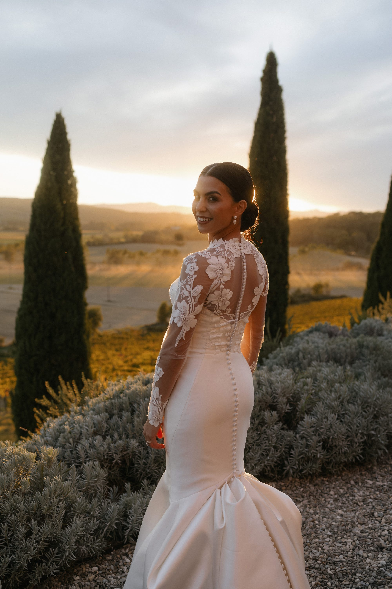

Tuscan Villa Wedding Celebrations
“Poolside with friends, pasta making under the pergola, and al fresco dinners as the sun dropped behind the cypress trees.”


A celebration of Italian culture - from the hands-on pasta making to the incredible wine pairings picked directly from the villa's centuries-old cellar.


Getting ready in the private villas of Ombroneta - 18th-century stone walls, soft Tuscan light, and nothing but rolling hills beyond the door.


Garden Ceremony in Tuscany


“Garden vows beneath white roses and Italian stone, with the rolling hills as witness. Every detail considered, nothing rushed.”

Al Fresco Reception in Tuscany

Chandeliers and candlelight, a long table winding through the garden.


After Party Celebrations in Tuscany


The Day-After Pool Celebration